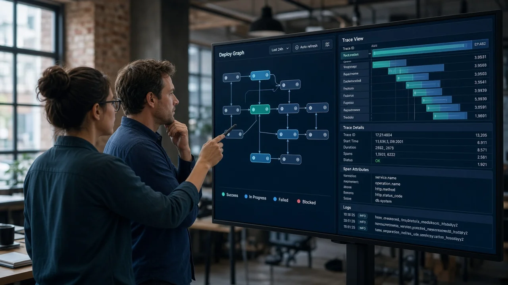
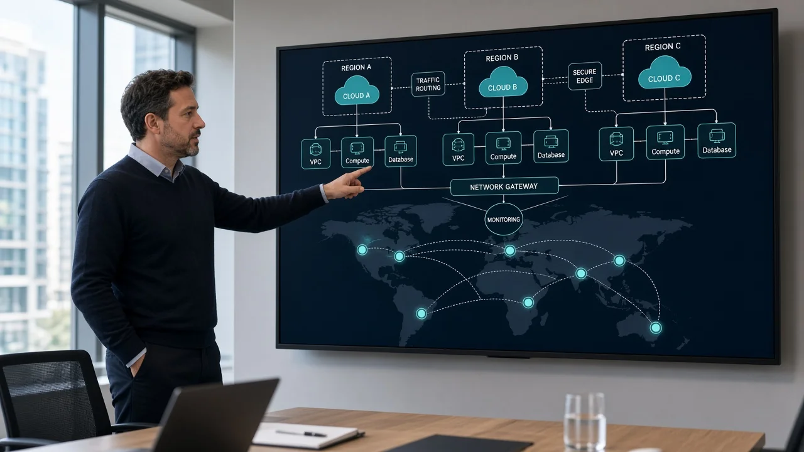

CEO
Alex Rivera
CEO & Co-founder
Sets product vision and partners with enterprise teams on delivery strategy.

StacklyTechnology
We build Graphite Signal—where delivery, observability, and cloud ops share one coherent story for modern SaaS teams.
Our story
Founded by platform engineers and product leaders, Stackly began as an internal toolkit to tame fragmented tooling across CI, cloud, and on-call.
Today we partner with scaling SaaS companies worldwide, embedding best practices from high-growth teams into a product anyone can adopt on day one.
Our promise stays the same:
Ship faster. Scale cleaner.

Mission
The fastest teams see the full picture—from commit to customer impact—and act on it together.
Automation that respects your existing stack—no rip-and-replace required.
Give leaders one view of velocity, reliability, and cloud spend.
Keep security and compliance continuous, not a quarterly scramble.
Values
Four principles we hire for, write into RFCs, and hold when the pager rings.
They show up in design reviews, incident retros, and every integration we ship.
Signals over dashboards-for-dashboards-sake. If it doesn’t change a decision, it doesn’t ship.
Teams own outcomes; we own the paved path—golden roads, not gated tickets.
Ship improvements weekly. Big rewrites need a clear signal—not a calendar commitment.
Security and transparency in every integration—evidence that travels with the deploy.
Leadership
Operators and builders who’ve lived fragmented tooling—and designed Graphite Signal to end it.
CEO & Co-founder
Sets product vision and partners with enterprise teams on delivery strategy.
CTO & Co-founder
Owns platform architecture, progressive delivery, and developer experience.
VP Platform
Leads SRE coaching, golden paths, and reliability programs for customers.
Head of Customer Success
Keeps every workspace shipping—onboarding, outcomes, and advocacy.
Timeline
From an internal toolkit to a global delivery platform—each step sharpened by teams in production.
Internal platform toolkit open-sourced to early design partners.
Unified delivery and observability workspace goes generally available.
Spend guardrails and policy engine across AWS, GCP, and Azure.
Global expansion with SOC 2 Type II and ISO 27001 certifications.
Impact
Proof that Graphite Signal helps product-led teams move faster without giving up reliability or spend control.
SaaS teams running delivery, observability, and cloud ops in one signal loop.
Median improvement after progressive delivery and shared SLO gates go live.
Average spend reduction when FinOps guardrails sit next to every deploy.
Supported by SOC 2 Type II and ISO 27001 continuous monitoring.
Global hubs
Remote-first with three studio hubs—so customers get local overlap without a sprawling office footprint.
Product, platform engineering, and customer success HQ. Closest to our earliest design partners.
Open map
Reliability research, EU data residency programs, and security engineering for regulated SaaS.
Open map
Forward-deployed architects and solutions teams covering APAC launches and multi-region rollouts.
Open mapCulture
Built by people who lived fragmented tooling. We hire for judgment, write things down, and treat customer reliability as our own.
RFCs, runbooks, and decision logs beat tribal knowledge—especially across three time zones.
If a release burns an SLO, we pause and learn before we ship again.
Useful increments every week. Big rewrites need a clear signal—not a calendar commitment.
We meet teams where their stack is. Golden paths are optional; outcomes are not.
Careers
Start with a free workspace or explore how Stackly partners with platform teams.